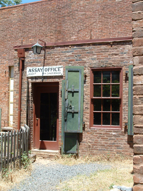
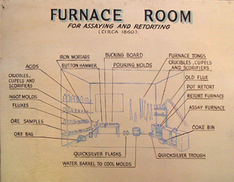
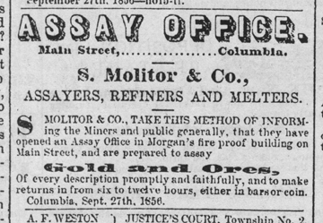
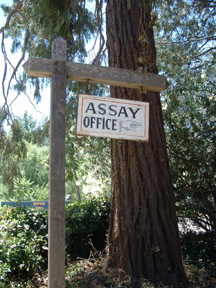

The limited supply of coins in the Northern California gold regions during 1848 to 1850 burdened the economy, since so many transactions needed to be made with gold dust.
The Assay office was authorized by the U.S. Congress in late 1850 to assay gold dust, and coin the dust into ingots or coins of a standard fineness and weight. This authority to create legal tender coins outside of an official U.S. mint is unique in U.S. history.
1854 D. O. Mills is the sole owner of the brick building on the southwest corner of Fulton and Main Streets with a secret passage leading to the assay and smelting office.

1856 George Morgan builds a 2 story brick structure. Among other businesses occupying the building is an Assay Office operated by the S. Molitor & Co.



This page is created for the benefit of the public by
Floyd D. P. Øydegaard.